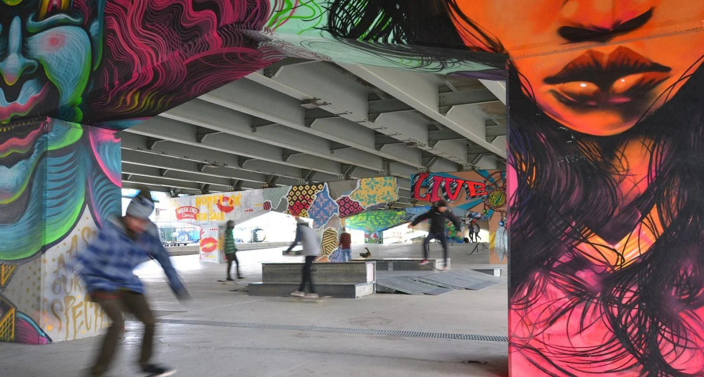
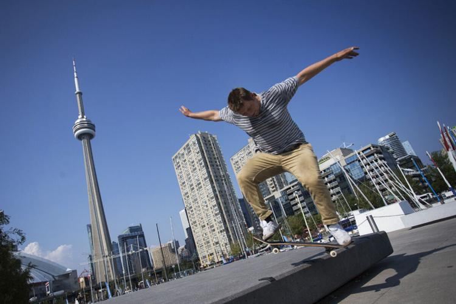

<!DOCTYPE html>
<html lang="en"></html>

<head>
    <meta charset="UTF-8">
    <meta name="viewport" content="width=device-with", initial-scale="1.0">
    <title>Toronto Grind: Skate Culture</title>
</head>

<body>
    <header>
        <h1>Skate The 6ix</h1>
        
    </header>
</body>
<Nav>
    <a href="one.html"></a>
    <a href="two.html"></a>
    <a href=""></a>
</Nav>
<div class="intro">
    <div class="intro-image">
        
    </div>
    <div class="intro-text">
        <h2>What is Toronto's Skate Culture Like?</h2>
        <p>Skate culture in the heart of Toronto is vibrant, dynamic, and deeply embedded in the city's urban landscape. From the iconic Dundas Square to the gritty streets of Queen West, Toronto's skate scene thrives on creativity, freedom, and self-expression. The city's diverse, ever-changing backdrop provides endless inspiration for skaters, blending street art, music, and fashion into a unique urban vibe. Local skateparks like the ever-popular Bellwoods and Exhibition Place serve as hubs for skaters of all levels, while the culture itself continues to influence Toronto's youth, offering a sense of community and rebellion against the conventional. This is my ode to skateboarding, a reflection of my experiences, my favourite spots like Graffiti Alley and the Art Gallery of Ontario, and my takes on the passionate, fearless people who bring this culture to life every day.</p>
    </div>
</div>

<section>
    <div class="history">
        <h2>A Brief History on Skating in Toronto</h2>
        <p>Toronto skateboarding has a long history that mirrors the general evolution of the sport in North America. Skateboarding in Toronto began in the early 1970s as a byproduct of surfing culture. Toronto skateboarders first skated using homemade decks, typically using roller skate wheels attached to wooden boards. The first big boom for skateboarding was in the mid-70s when pro equipment came into production, and the first skateboard parks. One of the most well-known of these at the time was "The Edge" in the city.

            By the 1980s, Toronto skateboarding gained more popularity, especially because it started becoming more focused on street skating. Skaters started using urban terrain like stairs, rails, and ledges as skate spots. This change in skate culture created makeshift skate spots around the city, including the iconic Dundas Square and financial district.
            
            In the 1990s and 2000s, the skate culture in Toronto diversified with numerous local shops, skate teams, and events supporting the community. The skateparks in the city grew, and Toronto began hosting international competitions, the biggest of which being the X Games. Today, Toronto has a thriving skateboarding culture, with an active community that continues to innovate the sport.</p>
    </div>

</section>